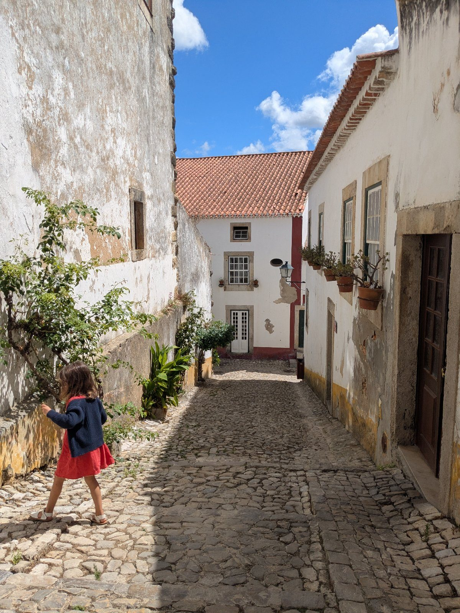

שעה
200 €
- כשעה של צילום
- 10 תמונות מעובדות
חוויה חד פעמית של צילום בפורטוגל
צילום רגוע וחם, בלוקיישן שתבחרו באזור הסילבר קואסט.
אני תושבת האזור, ואדאג שתרגישו בבית.
אני מכירה את פינות החמד החבויות שתיירים לא מכירים.
רק נדבר ונראה מה מתאים לכם.

אני גרה באזור הכי יפה בפורטוגל: חופי אוקיינוס יפהפיים ועיירה ציורית, עם מבנים שנשתמרו מאז ימי הביניים.
בזכות אהבתי הגדולה לטיולים ולצילום, אני מכירה את הפינות הקסומות והחבויות של האזור.
הנה כמה מהמקומות שבהם אפשר לצלם.
בדרך כלל אחד מצלם, ואחד חסר.
הילדים לבד, סלפי מהיר, תמונה מרחוק.
הזיכרון נשמר, אבל לא כולכם בו.
אני צלמת, ובטלפון שלי יש אלפי תמונות של הילדים שלי.
כמעט בכולן אני לא בתמונה.
כשאני גוללת אחורה אל התקופה שבה הם היו קטנים, אני מתמוגגת מהמתיקות שלהם, ופתאום מבינה כמה חסרה לי תמונה שבה אנחנו ביחד.
הילדים גדלים, והתקופה הזו לא חוזרת.
עכשיו אתם בטיול, רחוקים מהמרוץ הרגיל, עם זמן ועם רוגע.
זו הזדמנות יפה לעצור רגע ולשמור אותו.
ואם את אומרת "אני לא פוטוגנית", או שהוא מעדיף לעמוד בצד, אני מכירה את זה היטב.
לא צריך לדעת להצטלם.
אני אכוון אתכם בעדינות, ואצלם אתכם כמו שאתם, בלי פוזות.
לזוגות ולמשפחות שמגיעים לטייל בפורטוגל, ורוצים לקחת הביתה מזכרת מצולמת.
בסוף יהיו לכם תמונות מרגשות שכולכם בהן.
כאלה שיהיה כיף להסתכל עליהן גם בעוד שנים רבות.
שלוש אפשרויות, לפי הזמן שנוח לכם ומספר התמונות שתרצו לקבל.
200 €
220 €
250 €
אני צלמת, בוגרת בצלאל, עם ניסיון של יותר מעשור.
אני אוהבת צילום, אנשים, ילדים, טבע ובעלי חיים.
אני גרה בסילבר קואסט כבר ארבע שנים.
חשוב לי שהחוויה תהיה טובה, לא רק התמונות בסוף.
אני נעימה, חייכנית ואכפתית, ואמא בעצמי.
אעשה הכול כדי שתרגישו אצלי כמו בבית, גם כשאתם רחוקים מהבית.
גם מי שתמיד מצלם נמצא הפעם בתמונה.
מדברים בקלות, בלי להסביר את עצמכם בשפה זרה.
אני מכוונת בעדינות, ואתם נשארים טבעיים.
תמונות מקצועיות לשנים, ולא עוד תיקייה בטלפון.
אלופה אין עלייך! ❤️
דור
תודה רבה על הכל 🫶🏼🫶🏼
הי, רציתי רק לומר שהחוויה הייתה נהדרת, הילדים נהנו להצטלם ואני כמובן בשוק שהם זרמו וזה היה בזכותך! תודה רבה! אין עלייך ❤️🫶🏼🙏🏼
שירלי
You were amazing.
Thank you so much.
Daisy
התמונות הכי יפות יוצאות עם ילדים לא זורמים.
אני לא מצפה מהם לעמוד ולחייך למצלמה.
אני מצלמת את מה שקורה באמת.
זה תלוי בחבילה.
מקבלים 10, 15 או 25 תמונות מעובדות, בגלריה דיגיטלית.
זו חוויה חד פעמית, ואני אשמח ללוות אותה.
שלחו לי הודעה, ספרו לי מי מגיע ומתי אתם בפורטוגל, ואחזור אליכם בשמחה.